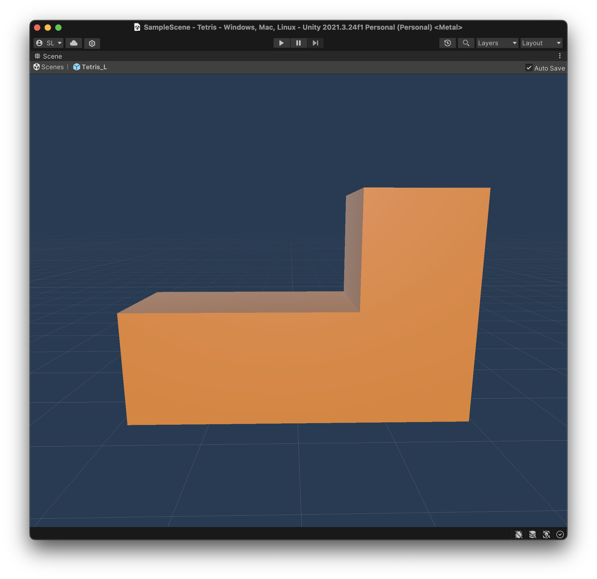
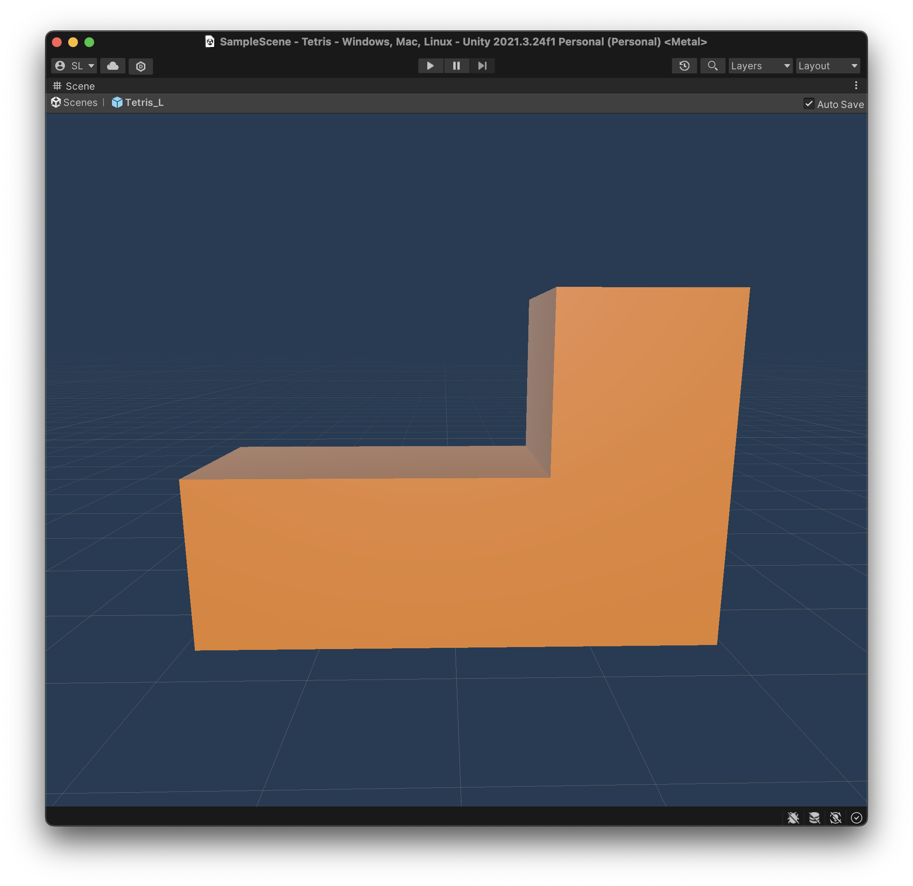
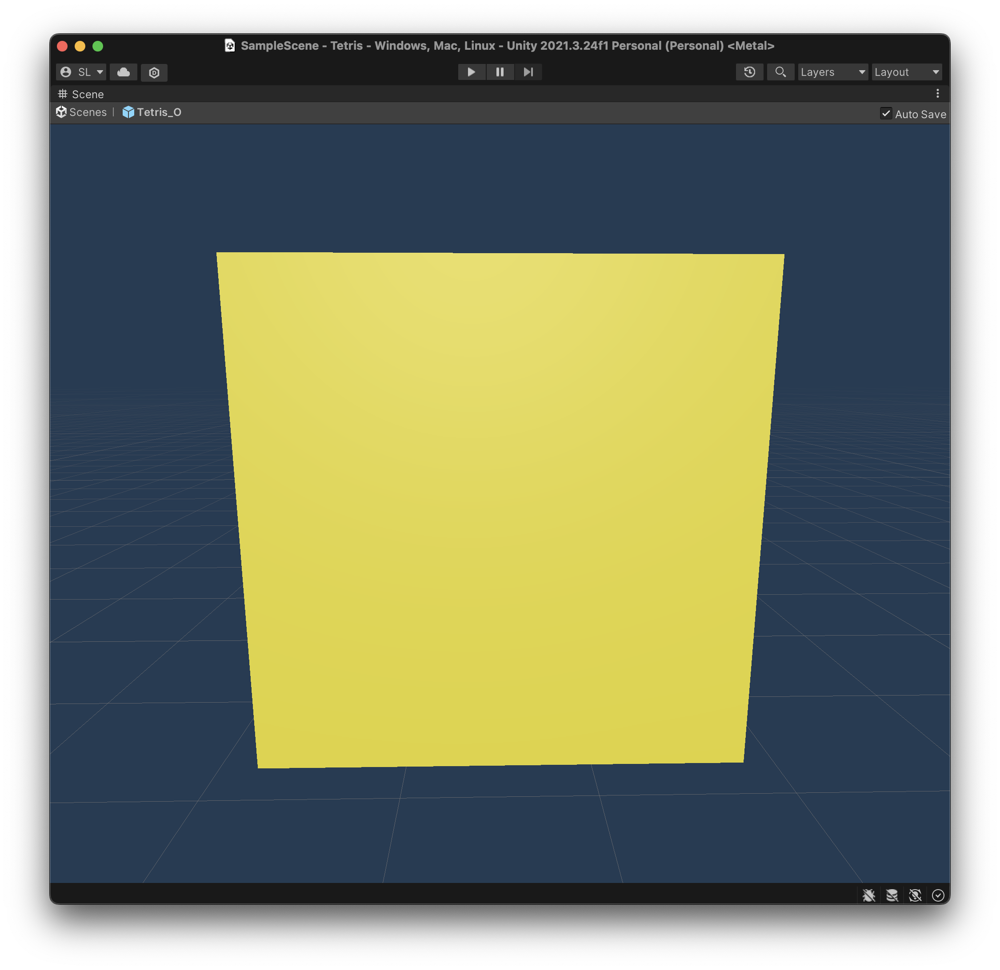
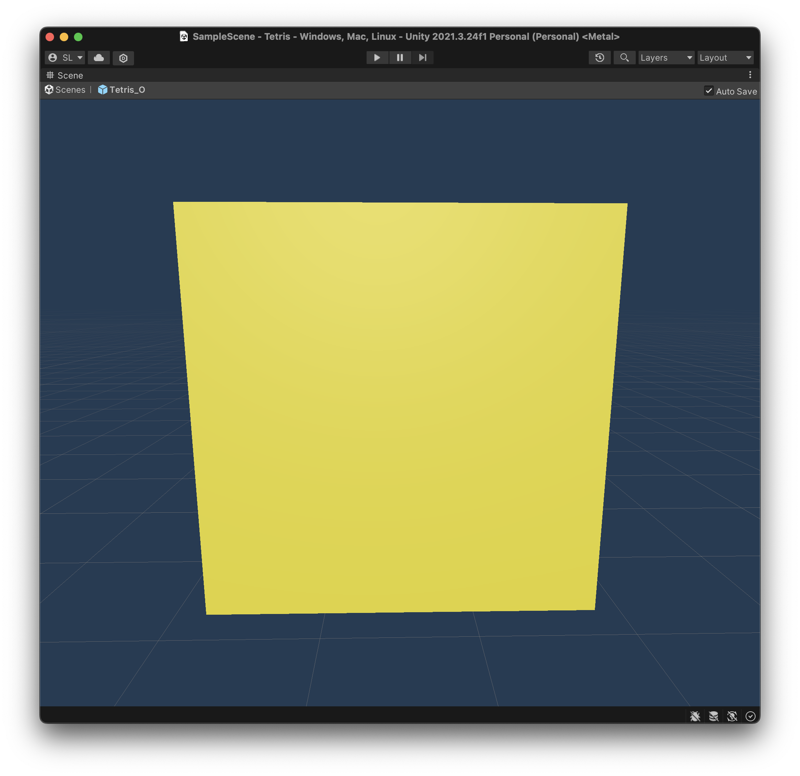

CS 175 Project: Tetris
By Steve Li and Elizabeth Ling
Background
Tetris, a puzzle game created by Soviet Engineer Alexey Pajitnov, has captivated audiences since the 1980s. First starting out on early computers such as the Electronika 60, the game quickly grew in popularity, and practically any device with a screen mostly likely has the capability to run the game. Within this project, we aim to bring the game to the modern medium, a 3D stylized version built using Unity using the concepts learned in class.
Tetris Basics
Rules
The game is rather simple. On a 10x20 grid of squares, players attempt to stack individual pieces, named tetrominoes, on top of each other. Filling an entire row of blocks clears the row of blocks, bringing every other block above it down a row. If the stack of blocks reach the very top, the game ends. Furthermore, as more lines are cleared, the pieces fall at an increasingly faster rate. The goal, therefore, is to clear as many rows before the stack reaches the top of the board.
Tetrominoes
A tetromino is a geometric shape composed of 4 squares. In a standard game of tetris, the player is presented with 7 tetrominoes, indicated by the letter the shape draws out: I, L, J, T, O, S, and Z.
 


 



Within our implementation of Tetris, we created the 3D models of each piece ourselves, and then applied a color material that matched that of the standard Tetris color sceheme.
The key compnonent of tetrominoes lies in the rotation system. In the Super Rotation System, or SRS, the current Tetris standard for how tetrominoes behave when rotated, the following rules are in place, taken from the Tetris wiki:
- When unobstructed, the tetrominoes all appear to rotate purely about a single point. These apparent rotation centers are shown as circles in the diagram.
- It is a pure rotation in a mathematical sense, as opposed to the combination of rotation and translation found in other systems such as Sega Rotation and Atari Rotation.
- For the I and O tetrominoes, the apparent rotation center is at the intersection of gridlines, whereas for the J, L, S, T and Z tetrominoes, the rotation center coincides with the center of one of the four constituent blocks.
The rotation states of all 7 tetrominioes according to SRS
Our rotation system attempted to emulate SRS as best as possible, placing the rotation point towards the center of the piece. With the I and O tetrominoes, we simply disabled rotation of the O piece, and the I piece we chose a block close to the center as the rotation point.

The pivot point of the I piece.
DAS and ARR
Another component of tetrominioes lies in their movement, also known as finesse in the Tetris community. Two settings are commonly used in most Tetris ports, known as DAS and ARR. DAS stands for Delayed Auto Shift, and represents the delay in which a piece will move when the player continues to hold a key. On the other hand, ARR stands for Auto Repeat Rate, which means the rate at which pieces move in their intended direction. Both of these were implemented and are tuneable with individual parameters in our C# scripts, allowing for players to adjust their piece handling capabilities. More details will be outlined below.
Unity Implementation (the fun stuff)

Our beautiful board.
Board Design
Board design is fairly simple. In the center we drew a 10x20 grid outlined by 3D cubes. On the top left, we outlined a square meant to display the "held" piece (will outline in a later section). During actual game play, the right part of the screen is filled with the next 5 upcoming pieces, allowing players to plan ahead their stacks.
Board Representation
On top of the 3D board drawn in Unity, we also represented our board
as a 20x10 array of Transform objects, notably so that
we can perform transofmrations on individual blocks rather easily.
public Transform[,] grid = new Transform[h, w];
Using this array representation is helpful, as it simplifies our workflow considerably. Therefore, for each frame, we perform the following:
-
For each piece movement, we first check if the piece is inside the
grid or colliding with another piece. This requires looping
through each individual cube of the active tetromino, converting
its piece-world coordinates to array positions using rounding, and
then checking the grid if the spot at the specified row and column
is null or not. This is implemented in the function
checkBoardPosition()underPiece.cs.- Checking if a board position is occupied is as simple as checking if an individual square's parent is not equal to the current tetromino. This is because in the scene graph, each individual cube is a child of a tetromino, and we set each item in the array to be the children of the tetrominioes.
- If the array position is free, that is, all cubes of the active piece are not occupying any space, then we move the piece to its specified location.
- Upon moving the piece, we set the piece's new location in the array by looping through the piece's children, converting its coordinates to array positions, and setting the array to be the child object. We also set its old locations to null.
When a piece is placed, we need to check whether any rows are
filled. This is accomplished by first getting all filled rows,
destroying all the Transform objects in the array, and
then moving all rows above the filled row down by one position,
shifting each cube down by 1 on the y-axis.
Piece Spawning
Within TetrisBoard.cs, we have the function
spawnTetrominoe() that's
Piece Movement
Within the Update() function of Piece.cs,
we have listeners for each of the arrow keys for left, right, down
movement, as well as piece rotation.
if (Input.GetKeyDown(KeyCode.RightArrow)) {
totalTimePassed = 0;
Debug.Log(Time.deltaTime);
moveTetromino(new Vector3(1, 0, 0));
}An example key listener, which calls another helper function to move the piece.
Piece rotation is performed by doing a simple 90 degree rotation on the z-axis around the first child of the tetrominio.
transform.RotateAround(transform.GetChild(0).position, new Vector3(0, 0, 1), angle);
DAS and ARR
DAS and ARR are implemented by keeping track of the time in which a
key is pressed. For DAS, we record the total time passed since a key
is pressed in a helper variable, setting the counter to 0 upon
initial press. When that time passes a set value, another condition
is triggered that calls Input.GetKey(). ARR is then set
by keeping track of the total time passed when the key is held down.
When the time passes a set ARR value, we continue moving the piece,
resetting the time value to 0. Altogether, our DAS and ARR
implementation results in the following:
timePassed += Time.deltaTime;
totalTimePassed += Time.deltaTime;
if (Input.GetKey(KeyCode.LeftArrow) &&
timePassed >= arr &&
totalTimePassed >= das) {
moveTetromino(new Vector3(-1, 0, 0));
timePassed = 0f;
} ARR is required to limit the rate that GetKey() is triggered.
Upcoming Pieces
Upcoming pieces are stored in an array of GameObjects, and are updated each time a new piece is spawned. Each piece within the array is then drawn on the right side of the board. When a new piece is spawned, we take the first piece in the array and instantiate that piece to the board. We then translate the rest of the upcoming pieces up the y-axis and then generate a random piece to replace the last slot.
The board with upcoming pieces on the right
Holding Pieces
External Resources
The following resources were used for the creation of this project:- Unity Tutorials: A lot of the learning process came from the Unity beginner tutorials, which helped us navigate the editor, how to draw items on the scene, and how to organize scripts and objects.
-
Tetris Tutorials:
- https://ghost-together.medium.com/tetris-turns-35-cfcf04c4f2bb: Depicts a way to make Tetris in javascript. This tutorial was used for inspiration on the 2D grid representation
- https://noobtuts.com/unity/2d-tetris-game: A tutorial on how to make 2D tetris in Unity. We used this mostly to help us with the object representation (grid of Transforms) and how to integrate scripts with the pieces and board.
- https://tetris.wiki/Tetris.wiki: The Tetris wiki. Mainly to help with piece design, rotation, and movement.
-
Other code examples:
- Mouse camera movement: https://gist.github.com/KarlRamstedt/407d50725c7b6abeaf43aee802fdd88e